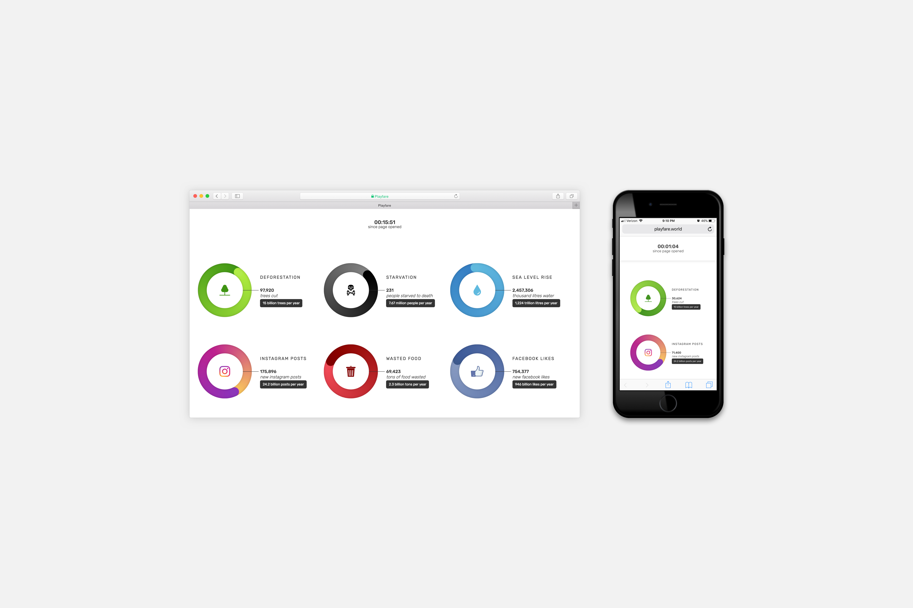

Playfare
2017. 4 weeks.
HTML/CSS. JavaScript. UI Design.
A class project with the goal to create an interactive experience visualizing data from different sources.
The main aspect of the visualization is to show the viewer the evident change happening to certain factors while they're simply watching.
The project is live here.

On average a person in america spends 10 hours and 39 minutes each day looking at screens to consume media. I decided to demonstrate the 'fare for playing' on the internet by gathering data from multiple sources, designing and then making a website that juxtaposes different types of information.
The intial process included a lot of math to make the collected data digestable. The next step was to wireframe visualizations to explore ways to emphazise the data.
The next step was figuring out which one would be the most effective and how juxtaposing certain factors could be more impactful.
After concluding upon the less complex version I started making the website using HTML, CSS and JavaScript/JQuery. While making the website, minor design changes and further design decisions relating to active website interactions had to be made to make it intuitive.
The project is live here.